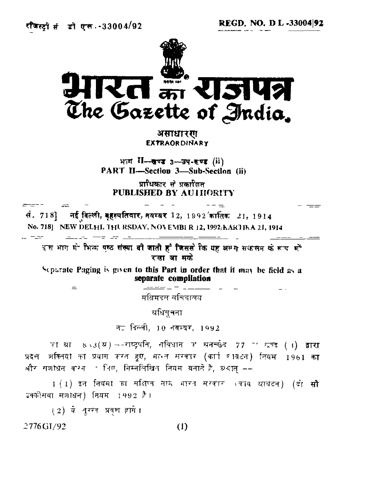
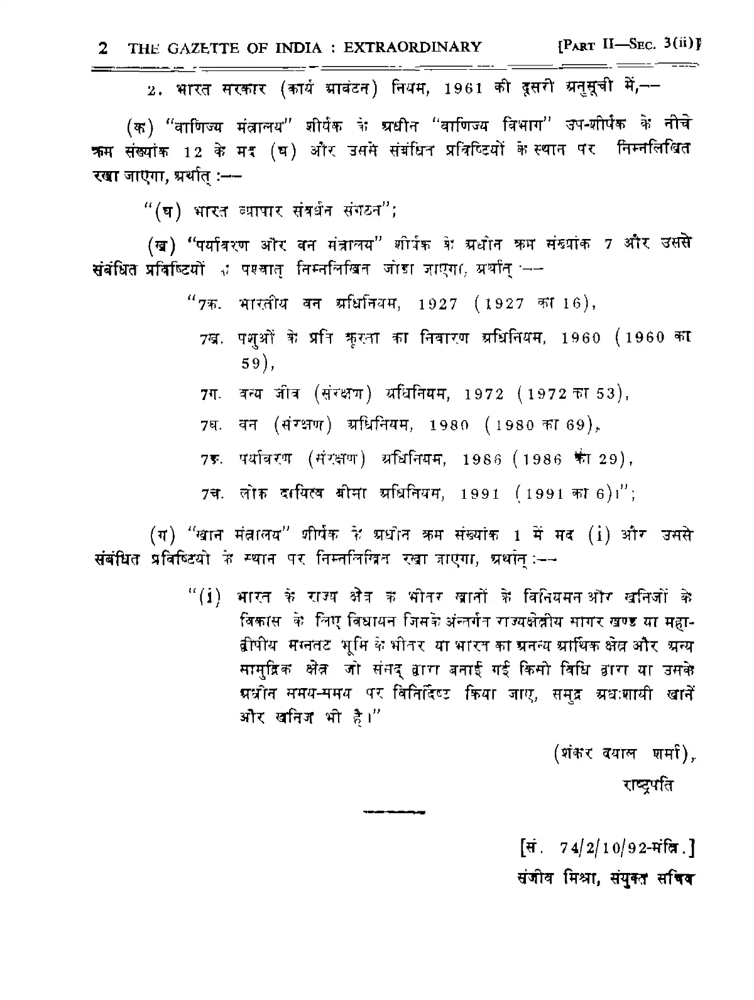
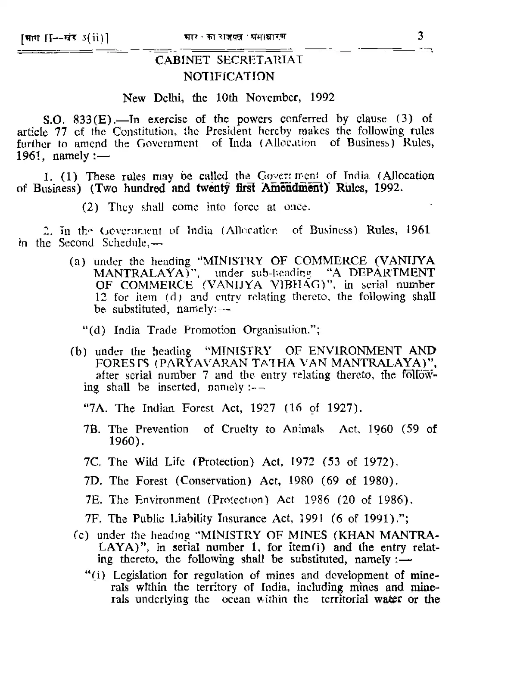
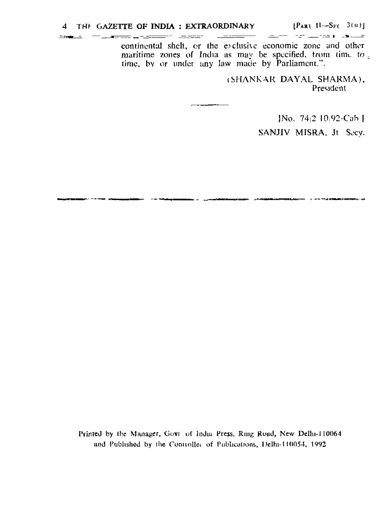

Amendment #221 (S.O. 833(E), 1992)
3 changes: 0 to the First Schedule, 3 to the Second Schedule. 3 applied
What it did to the ministries
- grewMinistry of Environment and Forests grows from 17 to 23 subjects change 2 · histories: Environment & Climate
The order, page by page
Page 1 of 4

Page 2 of 4

Page 3 of 4

123Schedule 2 › MINISTRY OF COMMERCE › DEPARTMENT OF COMMERCE › entry 12 › item d
- d. India Trade Promotion Organisation.
applied at schedule 2 › ministry MINISTRY OF COMMERCE › department A › group_heading II › entry 12 › item d in the Rules after #221
after Schedule 2 › MINISTRY OF ENVIRONMENT AND FORESTS › entry 7
- 7A. The Indian Forest Act, 1927 (16 of 1927).
- 7B. The Prevention of Cruelty to Animals Act, 1960 (59 of 1960).
- 7C. The Wild Life (Protection) Act, 1972 (53 of 1972).
- 7D. The Forest (Conservation) Act, 1980 (69 of 1980).
- 7E. The Environment (Protection) Act 1986 (20 of 1986).
- 7F. The Public Liability Insurance Act, 1991 (6 of 1991).
applied at schedule 2 › ministry MINISTRY OF ENVIRONMENT AND FORESTS › entry 7A in the Rules after #221
Schedule 2 › MINISTRY OF MINES › entry 1 › item i
- i. Legislation for regulation of mines and development of minerals within the territory of India, including mines and minerals underlying the ocean within the territorial water or the [Part [l—Src 3(0)] --- continental shelt, or the exclusive economic zone and other maritime zones of India as may be…
applied at schedule 2 › ministry MINISTRY OF MINES › entry 1 › item i in the Rules after #221
read page break
Page 4 of 4

How this document was read
From the Government of India (Allocation of Business) Rules, 1961 and their amendments, as published by the Cabinet Secretariat (cabsec.gov.in), read by orgpedia. The readings of the older scanned gazettes have known gaps.